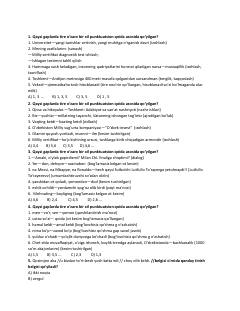

TBO'zbek tili punktuatsiyasi va tinish belgilari bo'yicha tahliliy testlar.
O'zbek tili punktuatsiyasi va tinish belgilarining qo'llanilish qoidalariga oid tahliliy testlar to'plami. Kitobda tire, ikki nuqta va vergul kabi belgilarning gapdagi o'rni va vazifalari misollar orqali tushuntirilgan.